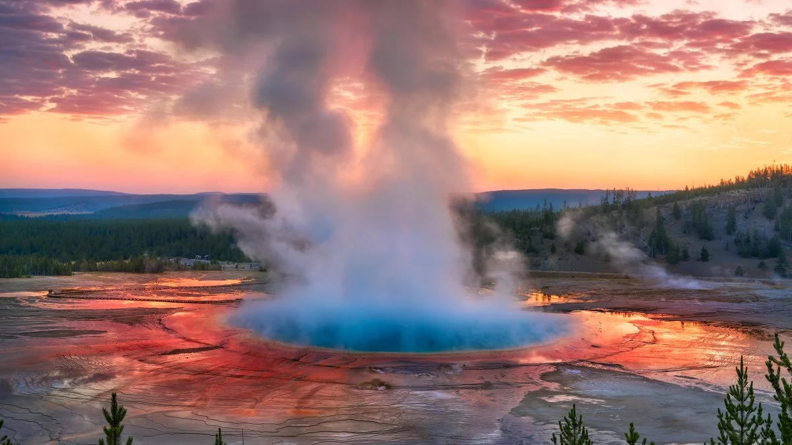
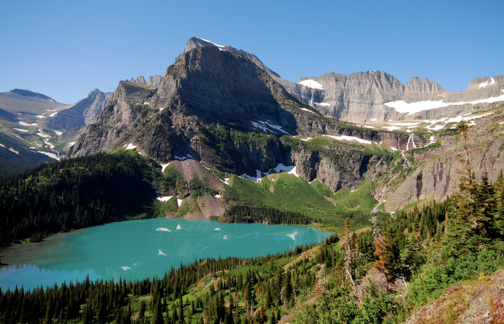
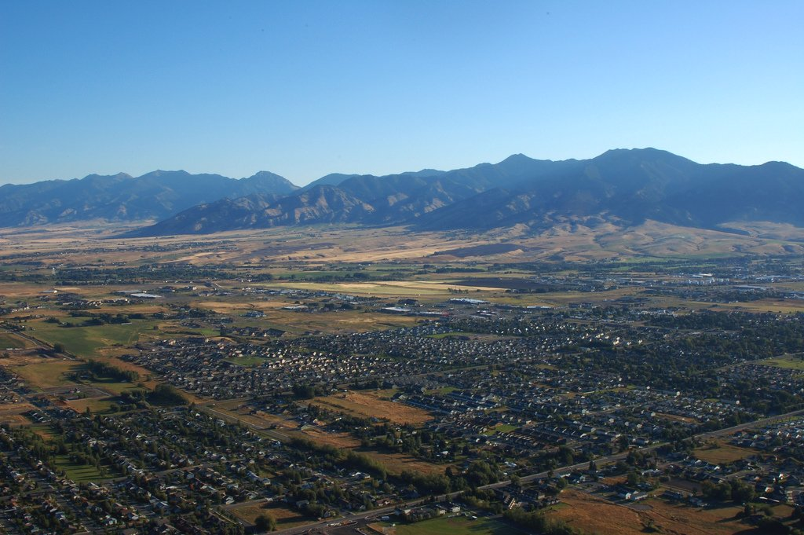
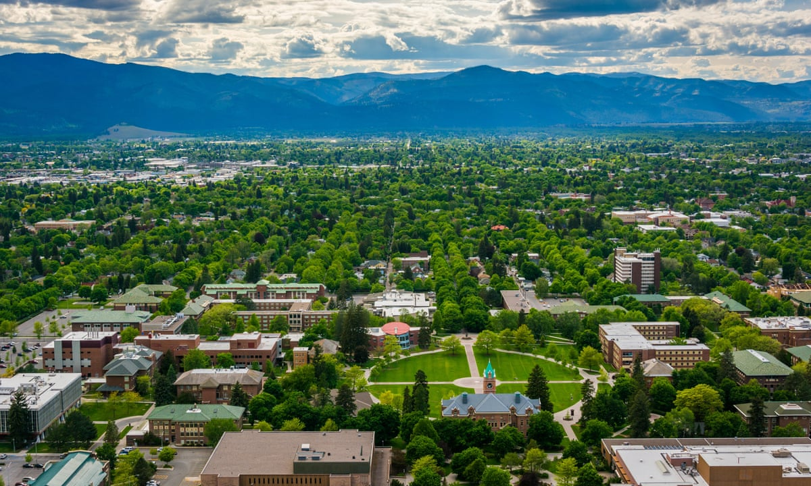
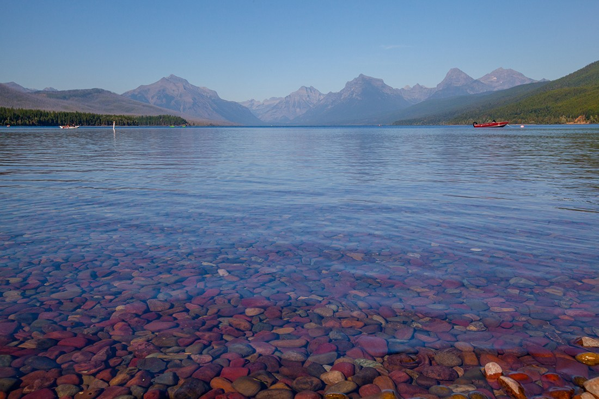
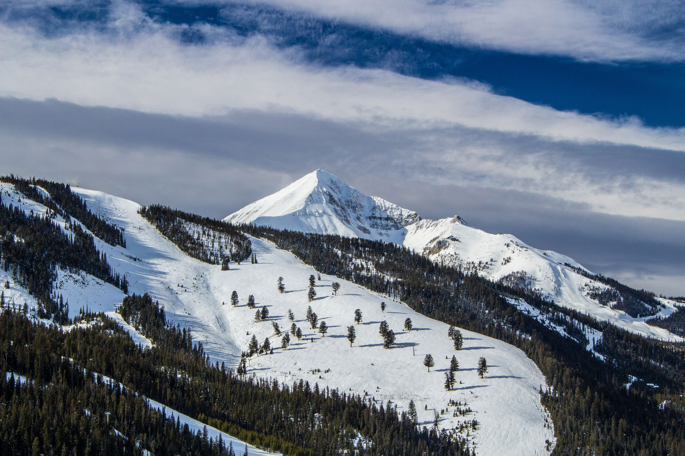
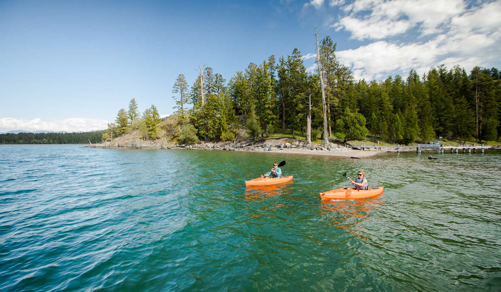

GUIDE TO MONTANA
The name Montana comes from the Latin word montanea, meaning "mountain" or "mountainous country"
No matter where you look in Montana, you’ll find unspoiled nature, charming small towns and relaxing hospitality. Explore Glacier and Yellowstone National Parks, then hit the road to discover more natural wonders. You can hike, bike or horseback ride through rugged mountain landscapes, fly-fish blue ribbon trout streams, paddle scenic rivers and lakes, or spend winter days carving fresh powder at ski resorts — then end your day wandering a vibrant main street or relaxing in a cozy lodge.
Don't miss
- Planning a staycation
- Glatier National Park
- Lewis and Clark Caverns State Park
How to get there
International flights fly directly into Montana Airport using American Airlines. From the airport it’s an easy 20-minute taxi or train ride to the city centre.
Useful tips
- Decide when to visit and what to pack with this info on seasonal weather in Montana.
- Find all of the city’s transport options with this guide on getting around.
- Visit a local visitor information centre for more detailed info on the area.
THINGS TO DO AND TOP ATTRACTIONS IN MONTANA

Yellowstone National Park, United States
Yellowstone National Park
Yellowstone was the first national park in the U.S. and is also widely held to be the first national park in the world. The park is known for its wildlife and its many geothermal features, especially Old Faithful geyser, one of its most popular. Half of the world's geysers and hydrothermal features are in Yellowstone, fueled by this ongoing volcanism. Lava flows and rocks from volcanic eruptions cover most of the land area of Yellowstone.

Glacier National Park, United States
Glacier National Park
Glacier National Park has almost all its original native plant and animal species. Large mammals such as grizzly bears, moose, and mountain goats, as well as rare or endangered species like wolverines and Canadian lynxes, inhabit the park. Hundreds of species of birds, more than a dozen fish species, and a few reptile and amphibian species have been documented. The park has numerous ecosystems ranging from prairie to tundra. The easternmost forests of western redcedar and hemlock grow in the southwest portion of the park. Forest fires are common in the park. he park encompasses over 1 million acres (4,000 km square) and includes parts of two mountain ranges (sub-ranges of the Rocky Mountains), over 130 named lakes, more than 1,000 different species of plants, and hundreds of species of animals. This vast pristine ecosystem is the centerpiece of what has been referred to as the "Crown of the Continent Ecosystem," a region of protected land encompassing 16,000 square miles (41,000 km2).

Bozeman, Montana
Bozeman
Nestled in a valley and surrounded by mountains, Bozeman is the urban base for adventure that is associated with the American Northwest. Hiking, biking, climbing, rafting, skiing, fishing—just about anything one can think of to do outside, Bozeman has it. Within the city there are a variety of restaurants, lots of craft beer breweries, and a few distilleries.

Missoula, Montana
Missoula
Missoula regularly turns up near the top of the list for travelers' favorite small cities in America. With a walkable, low-rise city center, plenty of riverside walking trails, the in-town University of Montana and a palpable sense of civic pride, it's not difficult to see why. Missoulians love to get outside, and summer means an almost endless stream of farmers markets, concerts in the park, outdoor cinema and similar celebrations of community life, while students from the University of Montana ensure a real sense of energy coursing through its streets. Patio seating is the rule not the exception, and an afternoon outing will surely involve some human-powered activity on the miles of urban and foothills trails. The wandering Clark Fork River is popular with stand up paddleboarders where it cuts through town, and is a fly-fishing magnet downstream. Put simply, it's one of the most agreeable urban spaces in the West.

Lake McDonald, Montana
Lake Mc Donald
Lake McDonald is the largest lake in Glacier National Park. Known for its view of the mountains and its colorful pebbles lining the shores, Lake McDonald is definitely one of the places at Glacier you don’t want to miss. Since this lake is so big, there are many ways to see and experience it. The Going-To-The-Sun Road winds alongside it for miles, offering tons of spots for a picnic lunch and skipping rocks. Lake McDonald Lodge offers easy access with parking, restaurants, trails, and more. Travelers can access Lake McDonald via several campgrounds, including Fish Creek and Sprague Creek, thereby getting a bit more private of an introduction to the lake. You can even drive the whole circumference of the the lake. But our favorite place to see the beauty of Lake McDonald is at Apgar Village.

Big Sky Resort, Montana
Big Sky Resort
Big Sky, Montana is a family-friendly, year-round destination. The most popular times to visit are during the winter ski season and during the summer season - but the fall and spring are a blast too! There's really no bad time of year to visit Big Sky. You can always find something fun to do in the little town that's next to everything. Big Sky is located in the Madison Range of Southwest Montana. It's almost right in the middle of Bozeman and West Yellowstone off of Highway 191. Just turn by the stoplight near the Conoco onto Highway 64 and you'll be in Big Sky. You can't miss it. It's the only stoplight in town.

Flathead Lake, Montana
Flathead Lake
Flathead Lake is the largest natural freshwater lake in the western United States. Lying in the Flathead Valley of Northwest Montana, the lake is more then 300 feet deep and extends north and south some 28 miles and is seven to 15 miles wide. As you drive and drive on the roads that hug Flathead Lake's shoreline, (US Highway 93 on the west and Montana Route 35 on the east) it's hard to believe manmade dams that are so common in the Pacific Northwest didn't create it. Rather, the lake is a fortuitous product of the activity of ice-age glaciers, and is fed by the Swan and Flathead Rivers.